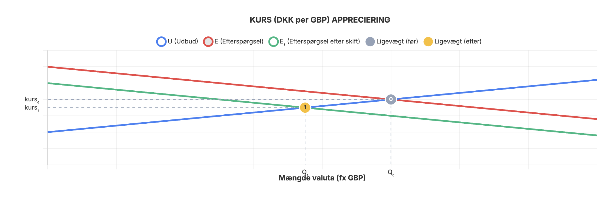
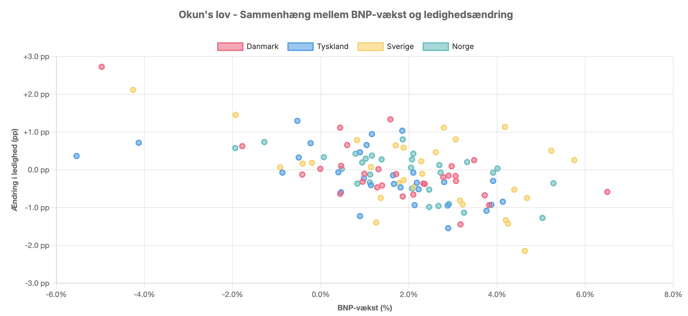

-

Temaprojekt
Formål:
Formålet med temaprojektet er at give dig kompetence i at bruge, hvad ud har lært i denne uge, i praksis.
Beskrivelse:
I skal læse introen til temaprojektet herunder, før I går i gang med opgaverne.
OLA 2 Intro -
Malene og Makro
Case: EDC Living i Dragør og Makroøkonomi
Malene Harrild vi tidligere har mødt er en erfaren ejendomsmægler og den drivende kraft bag EDC Living i Dragør.
Malene vil gerne have bedre indblik i makroøkonomien, da dette har betydning for boligsalget.
Afsender:
Et team af eksterne rådgivere, I er eksperter indenfor makroøkonomi.
Modtager:
Malene Harrild fra EDC Living
Man må ikke kontakte virksomheden, i forbindelse med dette projekt.
Kapitler til denne uge:
-
Opgave 1
Dansk økonomi
Forklar kort om niveauer og forskelle i nedenstående 2025 og 2026 nøgletal for dansk økonomi. Der må gerne være en kort forklaring af nøgletallet, samt en eventuel perspektivering til andre økonomier.
Nøgletal 2025 2026 Enhed BNP (nominelt) 3.020 mia. kr. 3.120 mia. kr. DKK BNP-vækst (reel fratrukket inflation) 0,9% 1,8% Procent Inflation (kerne) 1,5% 1,9% Procent Arbejdsløshed 5,8% 5,8% Procent Offentlig gæld 33,6% 28,3% % af BNP Handelsbalanceoverskud 46.900 mio. 40.000 mio. DKK Eksport (medicin) +50% +15% Vækst Private investeringer 1,2% 2,5% Procent Statsfinansieringsbehov 45 mia. 82 mia. DKK Reallønnsvækst 4,8% 3,5% Procent CO2-udledning 41.674.000 ton 40.200.000 ton Ton Begreb Forklaring BNP (nominelt) Samlet værdi af alle varer og tjenester produceret i Danmark i løbet af et år BNP-vækst Hvor meget økonomien vokser i forhold til året før (justeret for inflation) Inflation (kerne) Prisstigninger på varer/tjenester, uden energi og mad (som svinger meget)
Eksempel: Tandlæge regningen stiger fra 1000 DKK til 1019 DKKOffentlig gæld Hvor meget staten skylder sammenlignet med hele Danmarks økonomi (BNP) Handelsbalanceoverskud Danmark sælger mere til udlandet end vi køber (overskud i milliarder) Eksport (medicin) Danske medicinproducenters salg til udlandet (fx Novo Nordisk) Private investeringer Penge virksomheder bruger på maskiner, bygninger og teknologi Statsfinansieringsbehov Hvor mange penge staten skal låne for at dække sine udgifter Reallønnsvækst Lønstigninger efter at have trukket inflation fra (købekraft) CO2-udledning Samlet udledning af drivhusgasser fra energi, transport og industri Kilde Rolle Dækning Link Danmarks Statistik (DST) Primær kilde til officielle danske data BNP, inflation, arbejdsløshed, nationalregnskab dst.dk EU-Kommissionen Økonomiske prognoser for EU Vækst, gæld, inflation i dansk kontekst EU Economy Danmarks Nationalbank Pengepolitik og finansielle data Renter, statsgæld, valutareserver nationalbanken.dk Verdensbanken Global benchmarking BNP i USD, historiske tendenser data.worldbank.org Trading Economics Prognoser og markedsdata Realtidsøkonomiske indikatorer tradingeconomics.com Energistyrelsen Energi- og CO₂-data Udledninger, vedvarende energi ens.dk -
Opgave 2
Sammenligning af Danmark, USA og Kina
Vejledning: I denne opgave skal I sammenligne vækst og BNP for Danmark, USA og Kina ud fra figurerne i kapitel 1 i bogen.
Hvad skal I forklare:-
Sammenlign vækst og BNP for Danmark, USA og Kina baseret på figurerne i kapitel 1. I jeres sammenligning skal I:
- Beskrive forskelle i BNP-niveau mellem de tre lande
- Analysere vækstraterne for de tre lande over tid
- Sammenligne BNP pr. indbygger for de tre lande
- Forklare årsagerne til forskellene i vækst og BNP-niveau
- Perspektivere til relevansen for Malene og EDC Living
Tip: Se på Figur 1.1 (BNP-udvikling), Figur 1.2 (BNP indekseret), Figur 1.3 (BNP pr. indbygger) og Figur 1.4 (BNP pr. indbygger - international sammenligning) i kapitel 1.
-
Sammenlign vækst og BNP for Danmark, USA og Kina baseret på figurerne i kapitel 1. I jeres sammenligning skal I:
-
Opgave 3
Appreciering af DKK overfor pund
Vejledning: I denne opgave skal I analysere appreciering af danske kroner (DKK) overfor britiske pund (GBP).
Hvad skal I forklare:-
Forklar kort hvad nedenstående figur viser. I jeres forklaring skal I:
- Beskrive hvordan figuren illustrerer appreciering af DKK overfor GBP
- Forklare hvorledes en sådan udvikling kunne ske (hvad kan forårsage en fald i efterspørgslen efter GBP?)
- Undersøge om det rent faktisk er tilfældet indenfor de seneste år, at DKK er styrket overfor GBP
- Komme med ideer til hvad årsagen kunne være til en eventuel appreciering af DKK overfor GBP

Tip: Tænk over faktorer som udbud og efterspørgsel efter valuta, handelsbalancer, renter, økonomisk styrke og politiske faktorer, når I forklarer apprecieringen.
-
Forklar kort hvad nedenstående figur viser. I jeres forklaring skal I:
-
Opgave 4
Okun's lov
Vejledning: I denne opgave skal I forklare Okun's lov, som beskriver sammenhængen mellem BNP-vækst og ændringer i arbejdsløsheden.
Hvad skal I forklare:-
Forklar Okun's lov baseret på nedenstående figur. I jeres forklaring skal I:
- Beskrive hvad figuren viser om sammenhængen mellem BNP-vækst og ledighedsændring
- Forklare Okun's lov og dens teoretiske baggrund
- Analysere om figuren bekræfter eller afviger fra Okun's lov
- Kommentere på forskelle mellem de forskellige lande i figuren (Danmark, Tyskland, Sverige, Norge)
- Diskutere relevansen af Okun's lov for dansk økonomi

Tip: Tænk over faktorer som:- Sammenhængen mellem økonomisk vækst og arbejdsmarkedsudvikling
- Hvorfor højere BNP-vækst typisk fører til faldende arbejdsløshed
- Forskelle i arbejdsmarkedsstrukturer mellem lande
- Hvordan konjunktursvingninger påvirker arbejdsløsheden
-
Forklar Okun's lov baseret på nedenstående figur. I jeres forklaring skal I:
-
Format
Teamet afleverer alle opgaver samt eventuel dokumentation i et samlet word-dokument, med forside, indholdsfortegnelse der overholder metode-formalia.
Dokumentation for team-samarbejdet indsættes som bilag i samme dokument.
Der skal således kun afleveres et samlet word-dokument i afleveringsmappen.
Omfang:
Samlet omfang skal maksimalt være 4 normalsider.